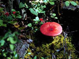

Ecosystems Quiz

Directions: Read the statement and choose the most appropriate response. You may click the helpful hints button at any time. Good luck!
1. Ecology is the study of *** .
a. the relations of animals and plants to their surroundings
b. the relations of living things to each other
c. animals and their environment
d. the processes which go on in living organisms
helpful hint
2. Respiration is the basically the reverse process of ***.
a. photosynthesis
b. glycolysis
c. phototropism
d. all of the above
helpful hint
>
3.
An example of a biotic component in a forest ecosystem is ***.
a. oxygen
b. carbon dioxide
c. bacteria
d. phosphorous
helpful hint
4.
A first order consumer is also known as ***.
a. a herbivore
b. a scavenger
c. an autotroph
d. a predator
helpful hint
5.
Bacteria, fungi and lichens would most likely be found in the *** layer of the forest.
a. third
b. second
c. first
d. base
helpful hint
6. The main difference between primary and secondary succession is that ***.
a. primary succession occurs in the year before secondary succession
b. primary succession occurs in barren, rocky areas and secondary succession does not
c. secondary succession ends in a climax species and primary succession ends in a pioneer species
d. secondary succession occurs in barren, rocky areas and primary succession does not
helpful hint
7. The main physical force behind the formation of the ecoregions of Saskatchewan was ***.
a. volcanoes
b. glaciers
c. wind
d. fire
helpful hint
8.
Foresters practice harvesting and silvicultural methods that will maintain
or enhance existing wildlife forest habitat. They may monitor the effects on the forest by observing the habitat, among other factors, of the ***.
a. wolf
b. white-tailed deer
c. beaver
d. silver fox
helpful hint
9.
A particular forest habitat exhibits the following characteristics:
- dense thickets of shrubs, including poplar and willow next to dense coniferous coverage
- regrowth of jack pine as a result of fire
- white spruce and tamarack seedlings
- animal species including lynx, warblers and grouse
The indicator species which is representative of this area is the ***.
a. moose
b. beaver
c. snowshoe hare
d. ovenbird
helpful hint
10.
An ecozone exhibits the following characteristics:
- The landscape can be a rolling glacial plain with part of the region sloping gently
and draining eastward via the Saskatchewan and Churchill rivers
and their tributaries which drain numerous lakes.
- Soils vary and can include loamy, clayey and sandy soils.
- Due to fires in a particular region of the zone, there is a limited amount of white spruce and balsam fir (which are usually dominant) replaced with fire-adapted aspen, pine
and black spruce in part of the zone.
- The forest in one area is a mixture of coniferous and
deciduous trees
- Wildlife includes moose, black bear,
white-tailed deer, elk, a varied waterfowl population, muskrats, barred owls and various birds including the blue warbler.
- The climate is subhumid and cool, encouraging the production of forage crops and encompassing the northern limit of arable agriculture.
The ecozone in the description is the ***.
a. Taiga Shield
b. Boreal Shield
c. Boreal Plain
d. Prairie
helpful hint